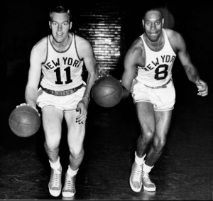

Basketball
Basketball was invented in 1891 by Dr. James Naismith. He was originally made to be played indoors during the winter months due to his students not being able to go outside. The game was originally played with a soccer ball and two peach baskets mounted on two posts. The game began to spread across the country. This led to the creation of The National Basketball Association (NBA) in 1937.

Basketball has become one of the most popular sports in the world. The NBA has become the largest basketball leagues in the world with it being home to the best players in the world. It is home to many star player Like Stephen Curry, Luka Donic, Victor Wembanyama, and many more. The NBA has also become a global phenomenon, with players from all over the world competing at the highest level. The game of basketball continues to evolve and grow in popularity, making it one of the most exciting sports to watch and play.
Positions and Players
Important Years in Basketball History
| Year | Event |
|---|---|
| 1891 | Basketball was invented by Dr. James Naismith |
| 1937 | The National Basketball Association (NBA) was created |
| 1992 | The Dream Team, the first American Olympic basketball team to feature active NBA players, won the gold medal at the Barcelona Olympics |
| 1997 | The WNBA was created |
| 2016 | The Golden State Warriors set the record for the most wins in a regular season with 73 wins and 9 losses |